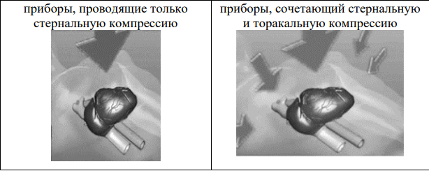
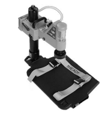
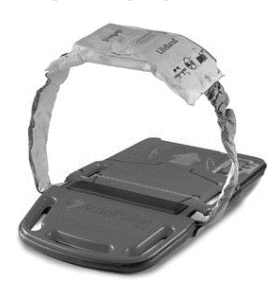

Автоматические устройства для сердечно-легочной реанимации
Правильно проводимый массаж грудной клетки – это тяжелая физическая работа, отнимающая много сил. Кроме этого, человек, который проводит массаж, не может одновременно выполнять какие-либо другие реанимационные мероприятия. Именно поэтому около полувека назад начали появляться устройства, автоматизирующие проведение сердечно-легочной реанимации. Они совершенствовались и дорабатывались.
В настоящее время такие приборы включены в стандарт оснащения машин скорой помощи класса "С" под названием "Устройство автоматическое для сердечно-лёгочной реанимации".
Существуют два типа устройств:


Первый тип – это приборы для проведения закрытого
массажа сердца при сердечно-легочной реанимации,
использующие поршень для давления на грудину. Прибор
как бы воспроизводит действия спасателя, проводящего
ручной массаж. Наиболее известными устройствами,
имеющими такой принцип работы, являются Lucas и
Lucas 2, производства Physio Control и Thumper, Life-Stat,
выпускаемые Michigan Instruments. Для компрессий эти
приборы используют сжатый воздух (Lucas) или кислород (Life-Stat), а значит для работы с ними
необходимо иметь дополнительный воздушный
или кислородный баллон.
 Для привода Thumper
может использоваться и кислород, и сжатый
воздух. Это делает всю конструкцию громоздкой,
затрудняет транспортировку. Модель Lucas 2 работает от аккумулятора, а
значит, не имеет данного недостатка. Некоторым
преимуществом ряда подобных систем является то, что они могут сочетать в
себе автоматическое проведение непрямого массажа сердца с
одновременным проведением искусственной вентиляции легких. В
частности, прибор Life-Stat способен проводить ИВЛ, синхронизированную с
компрессиями грудной клетки. А Thumper – не синхронизированную ИВЛ.
Для привода Thumper
может использоваться и кислород, и сжатый
воздух. Это делает всю конструкцию громоздкой,
затрудняет транспортировку. Модель Lucas 2 работает от аккумулятора, а
значит, не имеет данного недостатка. Некоторым
преимуществом ряда подобных систем является то, что они могут сочетать в
себе автоматическое проведение непрямого массажа сердца с
одновременным проведением искусственной вентиляции легких. В
частности, прибор Life-Stat способен проводить ИВЛ, синхронизированную с
компрессиями грудной клетки. А Thumper – не синхронизированную ИВЛ.
Стоит отметить, что автоматические устройства для проведения сердечнолегочной реанимации Lucas и Lucas 2 имеют ограничения использования при транспортировке пациента. Обязательным условием их работы является нахождение грудной клетки в горизонтальном положении. Соответственно, при транспортировке пациента по лестнице, прибор должен быть отключен или должны использоваться специальные носилки
 Второй тип - приборы, сочетающие в себе стернальную и торакальную компрессию при проведении непрямого массажа сердца, в настоящее время представлены только одним устройством: аппаратом AutoPulse, производимым Американской компанией Zoll. Принцип его работы такой: на груди пациента застегивается тканевой бандаж, который фиксируется в самом приборе, располагающемся под пациентом. Сначала прибор подтягивает бандаж, одновременно измеряя окружность груди и показатели сопротивления грудной клетки. Затем начинаются компрессии – подтягивание ленты бандажа таким образом, чтобы грудная клетка сокращалась на 20%. Этим достигается сжатие грудной клетки, а значит и сокращение сердечной мышцы со всех сторон. Это повышает эффективность массажа и увеличивает сердечный выброс. Такой способ проведения массажа сердца не накладывает ограничений на транспортировку пациентов. AutoPulse позволяет транспортировать пациентов с углом наклона до 45 градусов, например, спускаясь или поднимаясь по лестнице.
Интересной особенностью аппарата AutoPulse является то, что он позволяет проводить закрытый массаж сердца беременным женщинам, которым из-за пережатия нижней полой вены маткой, рекомендовано проведение непрямого массажа сердца в положении «на боку» под углом около 30 градусов. Ни один другой прибор не способен работать в этих условиях.
В стандарте ЕСР 2015 года указано, что рутинное применение устройств для механических компрессий грудной клетки не рекомендуется, но их использование возможно в тех ситуациях, когда длительное выполнение качественных компрессий невозможно или угрожает безопасности спасателя, поэтому их применение оправдано при проведении реанимационных мероприятий в процессе эвакуации авиационным или автомобильным транспортом, где проведение классического непрямого массажа сердца не представляется возможным.